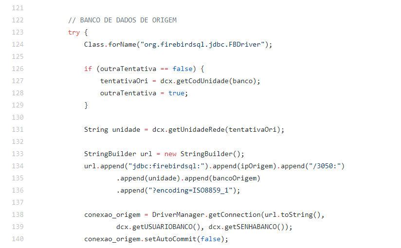
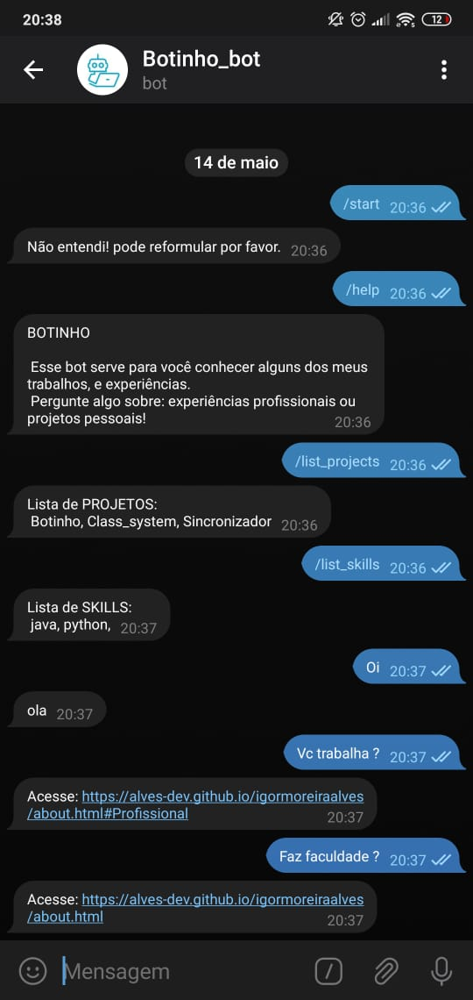

Sistema desktop em Java.
O sistema desktop era em java, responsável por automatizar algumas tarefas; onde o mesmo se comunicava com um banco firebird e gerava arquivos em .txt para alimentar aplicações de terceiros. O sistema também fazia a utilização de uma API de um sistema de controle de chamados tomticket afim de criar chamados a partir de verificações que eram feitas no banco de dados do cliente ou na maquina em questão.
Juntamente com esse sistema criei um servidor que ficava recebendo informações de minutos em minutos informando se o sistema "cliente" estava rodando dentre outras informações, eles se comunicavam via socket java.
Foi usado a IDE Netbeans, com o plugin do bugzilla para a verificação do código e rastreamento de erros. Não foi usado nenhum framework de banco de dados, para a conexão eu usei o driver JDBC. Todas as manipulações de dados com o banco foram realizadas com SQL puro.
<--https://www.bugzilla.org/ Um bot com o Telegram e o Watson da IBM.
Nesse projeto realizei a integração de um bot Telegran com o Watson da IBM. Caso tenham uma conta Telegram podem velo em funcionamento @Igor_Moreira_bot, nome Botinho_bot.
Ele é meio bobo ainda, o fluxo de conversa no Watson ainda não foi desenvolvido completamente. Segue um exemplo:
© Design by TEMPLATED.